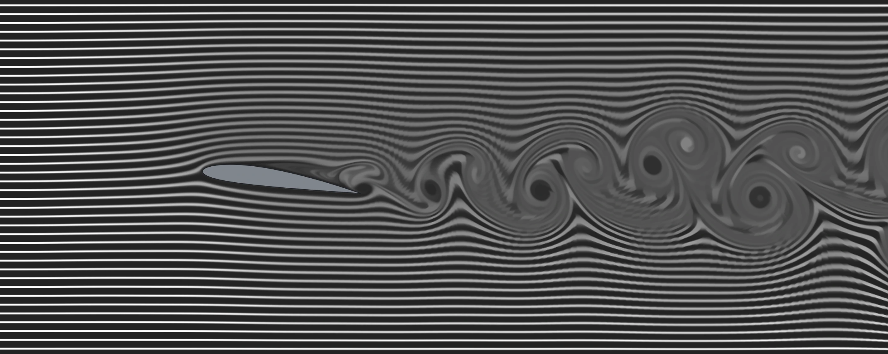
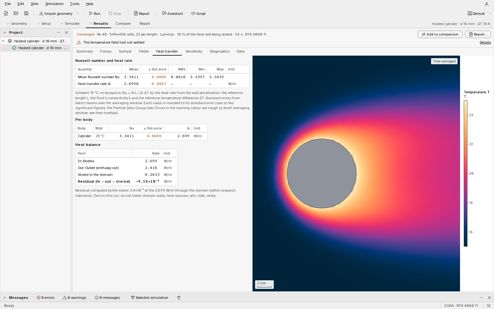
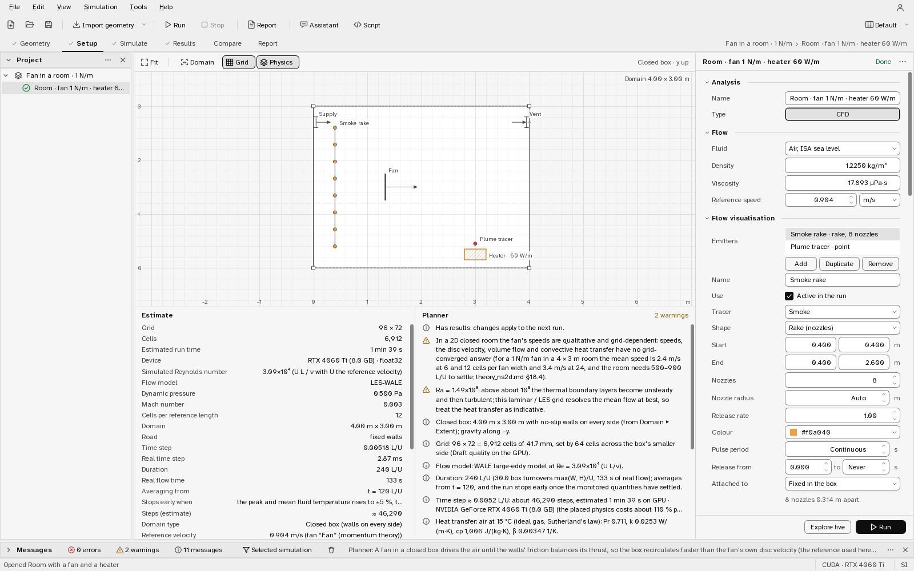
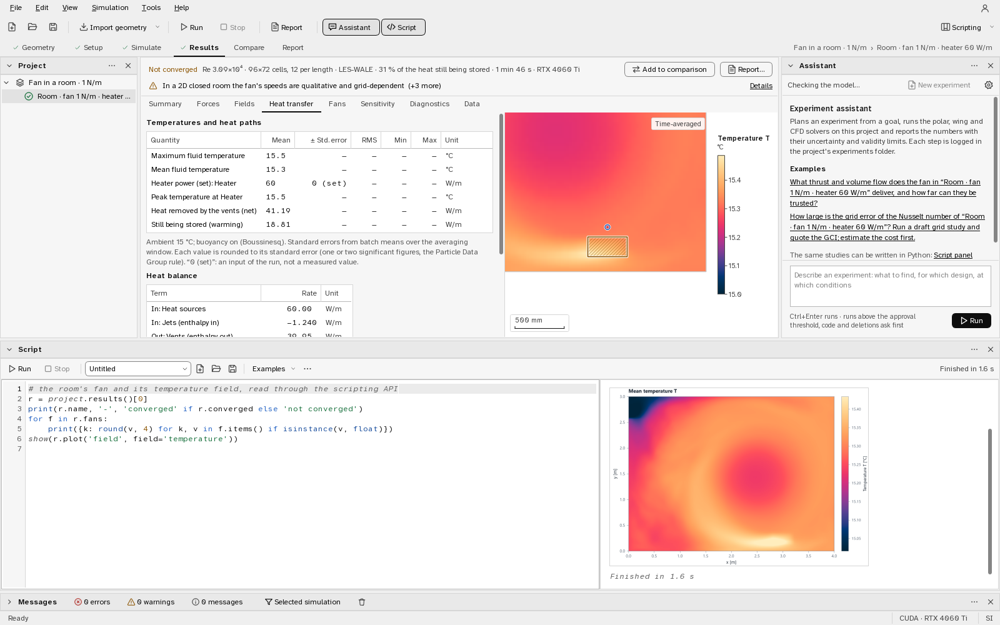

Aerolume
An open-source aerodynamics and heat-transfer studio, built for independent student researchers who need numbers they can trust.
No black-box results.
Every solver is checked against published benchmarks. Each check has a tolerance band written in validation/run_all.py before the case runs. The one band revised after its result was known (the square cylinder’s drag, checked at two grid levels) is marked below. Every number on this page comes from a script in validation/, and the validation report names which.
In the last full run (1 November 2026), 126 of 128 checks passed. Two cases have a failing check: Square cylinder, Re 100; Plane laminar jet from a port. Both stay in the report as failing, with the numbers and the reason.
| Check | Aerolume | Published | Difference | Band | Result |
|---|---|---|---|---|---|
| Verification (exact answers)10 of 10 checks pass | |||||
| Taylor–Green 3D spatial order (8 → 16 cells)Exact solution | 1.894 | 2 | −5.3 % | 1.8–2.2 | pass |
| 2D flow15 of 16 checks pass | |||||
| Schäfer–Turek 2D-2, Cl,max (40 cells/D)Schäfer & Turek (1996) | 1.034 | 0.99–1.01 | +2.4 % | 0.9603–1.04 | pass |
| Square cylinder Re 100, mean Cd (32 cells/D)Sohankar et al. (1998)Band revised after this result was known: report, section 3 | 1.582 | 1.477–1.494 | +5.9 % | 1.403–1.569 | fail |
| Square cylinder Re 100, mean Cd (48 cells/D)Sohankar et al. (1998)Band revised after this result was known: report, section 3 | 1.549 | 1.477–1.494 | +3.7 % | 1.403–1.569 | pass |
| 3D flow3 of 3 checks pass | |||||
| Sphere Re 100, Cd (24 cells/D, 2.85 % blockage)Clift et al. (1978) | 1.148 | 1.087 unconfined | +5.6 % | 1.05–1.15 | pass |
| Heat transfer41 of 41 checks pass | |||||
| Heated cylinder Re 40, Pr 0.71: mean Nu (32 cells/D)Biswas & Sarkar (2009) | 3.336 | 3.2–3.255 | +2.5 % | 3.072–3.385 | pass |
| Fans and jets14 of 15 checks pass | |||||
| Round jet Re 100: rms of u/u_c − (1 + ξ²/4)⁻² inside 2 r½Schlichting (1933) | 0.01064 | 0 | — | < 0.02 | pass |
| Plane jet Re 25: drift of the core momentum flux ∫u² dy over 8 ≤ x/b ≤ 24Bickley (1937) | 0.06158 | 0 for a free jet | — | < 0.05 | fail |
| Airfoil polars23 of 23 checks pass | |||||
| NACA 0012 Re 6×10⁶ tripped, cl at 8.3°Ladson (1988) | 0.9315 | 0.887 | +5.0 % | 0.8373–0.9373 | pass |
| Finite wings20 of 20 checks pass | |||||
| Weber & Brebner 45° wing, CL at 10.5°Weber & Brebner | 0.5808 | 0.559 | +3.9 % | 0.5311–0.587 | pass |
How each solver works and how it was verified: 2D and 3D Navier–Stokes, airfoil polars, finite wings.
Before you quote a number
The checks above hold where they were run. These limits apply to every run; the overview carries the same list, and the report says what has not been validated.
- High Reynolds numbers. Above about 10⁴ the boundary layers are not resolved; there is no wall model and no transition model in the Navier–Stokes solvers. Absolute vehicle drag is not validated (a wall-unresolved Ahmed-type body reads about 2.2× its wind-tunnel drag): compare designs run the same way, do not quote a car's Cd. Airfoils at flight Reynolds numbers belong to the polar solver, wings to the finite-wing analysis.
- 2D vehicles are infinitely wide side profiles.
- Uniform grids. No local refinement; the planner trades domain size, blockage and resolution and states the trade. The immersed wall is about one cell thick, so sharp edges converge slowly.
- Heat transfer is Boussinesq (small temperature differences) with constant properties; no radiation, no conduction inside solids, no turbulence model for convection. Validated for laminar natural and forced convection at Pr 0.71.
- Fans are actuator discs (no blades); smoke is passive visualisation.
- Incompressible only. Not in this release: a Lattice-Boltzmann solver and neural-operator surrogates.
Planned for 0.2. The first three limits are the next version's work: local grid refinement with a sharper immersed wall, a wall model with a transition model (so absolute drag at high Reynolds numbers can be validated), and finite-width 2D vehicles (a side profile run as a 3D body of a chosen width). A design with prototype measurements exists; none of it is in 0.1.0, and the limits above describe this release as it is.

website/tools/make_figures.py.From a shape to a report, in one program
Geometry, setup, simulation, results, comparison and report, in that order. Every result carries its units, the Reynolds number actually simulated, the grid, the convergence state and the solver’s own diagnostics.
Flow around any shape, in 2D and 3D
Unsteady incompressible Navier–Stokes written in PyTorch, on an NVIDIA GPU or the CPU. In 2D around any number of sections or vehicle profiles; in 3D around imported STL, OBJ or PLY meshes, with a symmetry plane, a moving road and rolling wheels. The 3D views show smoke, streamlines from a movable rake, slices and vortex iso-surfaces.
- 493 steps/s on 1024 × 512 cells in 2D, RTX 4060 Ti
- 44.9–49.2 steps/s on 4.2 M cells in 3D, same GPU shared with other jobs (54.7 when idle)
- 61 steps/s on 512 × 256 cells in 2D on a desktop i7-13700F, 4 threads
Measured with validation/bench_ns2d.py and bench_ns3d.py; every configuration.

Smoke, heat, fans and jets
Place emitters that release smoke in up to four colours or tracer particles. Hold bodies and walls at a temperature or a heat flux, with buoyancy; add heaters, fans set by thrust or a target speed, jets and vents, in a wind tunnel or a closed room.
Results give heat rates and Nusselt numbers with their standard errors, the heat balance of the domain and what each fan delivers.




Draw into a running flow
Explore mode keeps the flow running while you change the angle or the speed, draw and erase obstacles, and drag emitters, fans and heaters to new places.
The diagnostics show what decides whether a run can be trusted: the divergence left after the projection, the change of each field per step, the CFL number and the pressure residual.

Script it, or ask the assistant
import aerolume as al is the API the program itself uses: designs, runs, sweeps, results with their standard errors, plots and exports.
The experiment assistant plans and analyses runs with Claude or a local model through Ollama. Every change it suggests does nothing until you click Apply, and nothing leaves your computer until you agree.


Get Aerolume
Version 0.1.0, the first release, for Windows 10 and 11, 64-bit. Free and open source under the Apache License 2.0.
There is no public download yet. The source repository is not public yet either; once it is, this page will link to it and show the command that clones it.
The build makes Aerolume-0.1.0-cuda-setup.exe, which installs for the current user without administrator rights, with Python, PyTorch and its CUDA libraries, VTK, Qt, the documentation and the validation scripts inside. GPU runs need only an NVIDIA driver; without one, every analysis runs on the CPU.
The installer is not code-signed, so Windows SmartScreen asks once. The installation guide covers installing from source with pip, the portable folder and troubleshooting.
Build the installer, inside a copy of the repository
pip install pyinstaller # and Inno Setup 6
python packaging/build.py --variant cuda
python packaging/build.py --status # does the build match the sources?No account needed
Aerolume works fully offline and sends nothing anywhere by default. Accounts exist only once you connect a Supabase project of your own: sign-in by email, a magic link or a code, or GitHub and Google through the system browser; cloud copies of projects; expiring read-only links to share a result. There is no Aerolume-run server.
Open source
Released under the Apache License 2.0: use it commercially, modify it and redistribute it. The airfoil solver builds on mfoil by Krzysztof J. Fidkowski (MIT licence); the third-party notices list the rest. The repository is not public yet, so this site cannot link to the source code or an issue tracker; it will once the repository is published.
A change that moves a coefficient has to say by how much, on which validation case, and why the new value is closer to the reference: the contributing guide.